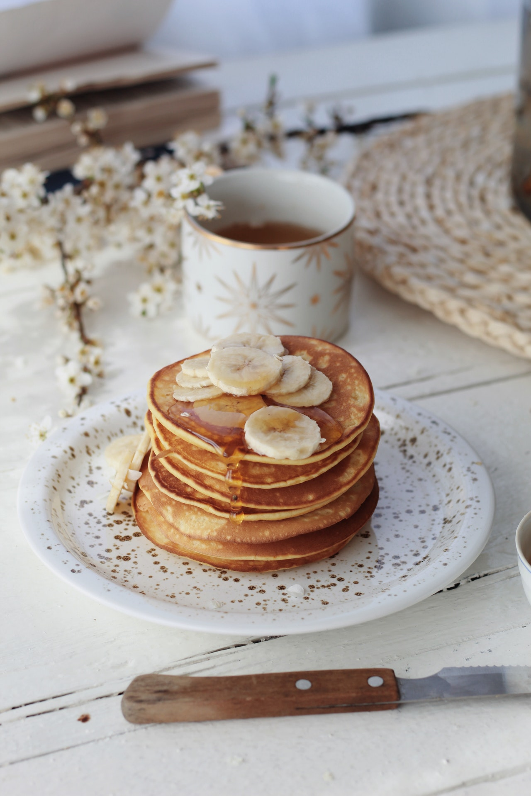

Banana Pancakes

Fluffy banana pancakes, great to make ahead and freeze for a week's worth of breakfast.
Super easy recipe that turns out fluffy pancakes. I like to make them on a Sunday and reheat in the toaster for breakfast during the week.
Ingredients
- 1 cup all-purpose flour
- 1 tbsp white sugar
- 2 tsp baking powder
- 1/4 tsp salt
- 1 tsp ground cinnamon
- 1 egg
- 1 cup milk
- 2 tbsps vegetable oil
- 2 bananas
- 1 tbsp butter to cook with
Steps to make this beautiful pancakes
- In a large bowl, combine the flour, sugar, baking powder, salt and cinnamon.
- In separate bowl or plate, mash the bananas.
- In another bowl whisk the egg and add in the milk, oil and mashed bananas.
- Add the wet ingredients to the dry ones and mix them all together into a wet batter.
- Keep your pan at medium heat, adding a small pat of butter between each set of pancakes.
- Ladle the batter into the pan, ~1/4 of a cup for each scoop and cook until bubbles start forming. Flip the pancake and cook until the pancake rises and both sides are golden.
- Enjoy
Back to Home page